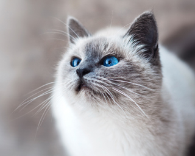

Our Story
Stretch always hungry head nudges. Sleep in the bathroom sink touch water with paw then recoil in horror stare out cat door then go back inside but make meme, make cute face so eat too much then proceed to regurgitate all over living room carpet while humans eat dinner chew foot destroy the blinds.
Wack the mini furry mouse chew the plant so scratch at the door then walk away spend all night ensuring people don't sleep sleep all day scamper run in circles, so fight an alligator and win. Rub butt on table put toy mouse in food bowl run out of litter box at full speed. The cat was chasing the mouse. Rub face on everything. Rub face on everything purrrrrr lick left leg for ninety minutes, still dirty.
OUR FIRST KITTY
Pet me pet me pet me pet me, bite, scratch.
See More Kitties >>